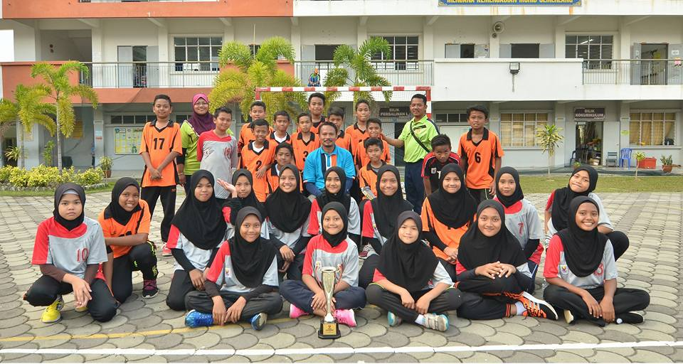
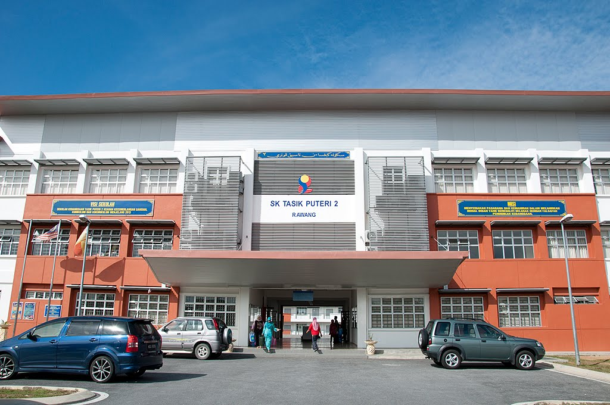
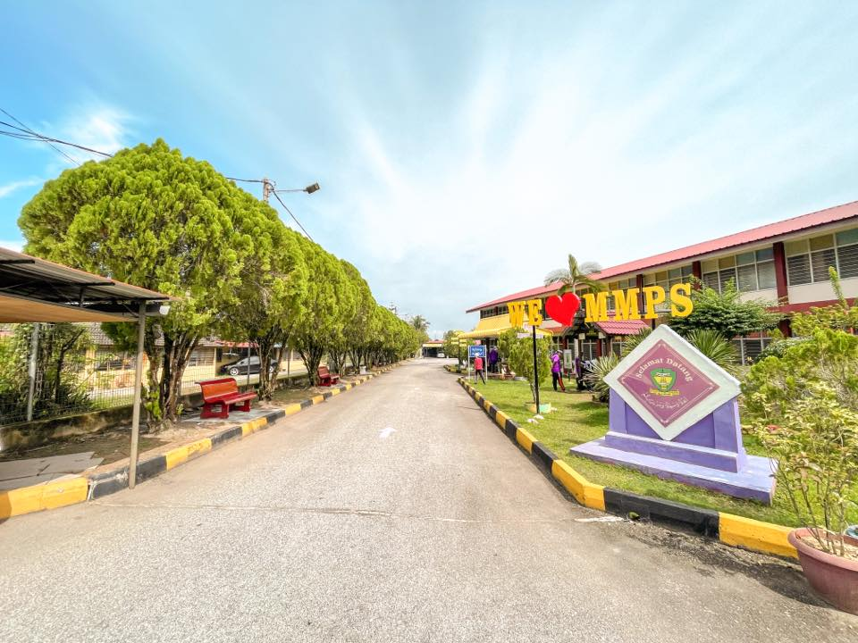
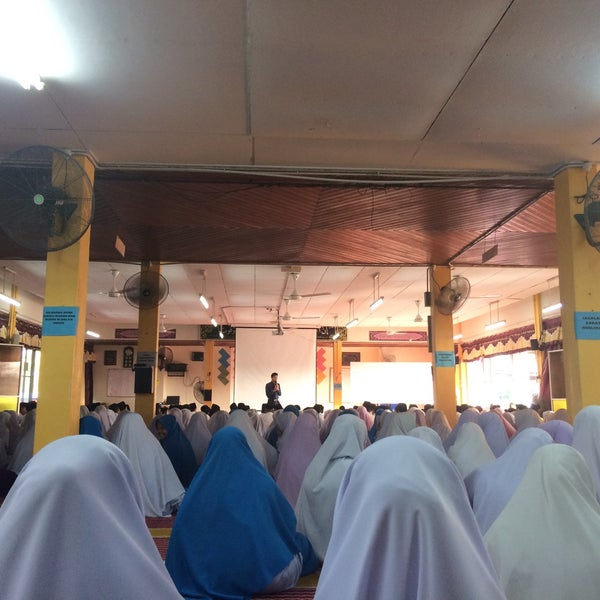

| |
|
|
KNRSYKRA PERSONAL WEBSITE |
|---|
EDUCATION


I started my primary school in SK Tasik Puteri 2 from 2008-2013. This is where I first learned how to make friends and respect the teachers.


As I graduated and excel in my UPSR, I continued my secondary school in a boarding school located at Langgar, Kedah, Maktab Mahmud Pokok Sena(MMPS).

Next, I continued my professional study in Diploma Information Management at Universiti Teknologi MARA (UITM) Kampus Machang. I've been study here for two years and half.